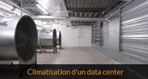
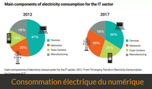

Aussi appelés data centers en anglais, ce sont des endroits où sont présents d'immenses ordinateurs, appelés serveurs. Ces serveurs stockent alors des données (data) présentes sur internet. Par exemple des sites, des images, vidéos, ou le contenu que vous mettez et consultez sur les réseaux sociaux. En bref, l'ensemble du web.
Amazon, ce géant d'internet, se développe encore et toujours depuis plus de 20 ans. L'entreprise à démarrée fin 1995, à la période où le web commençait à faire parler de lui. Jeff Bezos travaillait alors dans un garage avec quelques employés, et le site internet était stocké sur un petit serveur installé à cet endroit.
la maison et le garage où tout à commencéAu fur et à mesure du temps, la clientèle fut de plus en plus nombreuse et la demande de plus en plus importante. Bezos avait un objectif de proposer 1 million de livres à la vente sur son site. Prévoyant quant à l'avenir d'Amazon, il investit alors dans d'immenses fermes de données. Elles servent à stocker tous les articles en vente, et par la suite les séries, les musiques, et l'ensemble des services proposés par la marque. L'espace libre des serveurs est actuellement utilisé pour des services de clouding. (en bref, Amazon loue cet espace à des entreprises, et le bénéfice généré permet de rembourser les coûts de fonctionnement) Dans le monde, l'entreprise possède plus de 150 data centers, dans les 5 continents.
Les data centers sont énergivores. Les locaux sont équipés d'immenses systèmes de climatisation, qui représentent 40% de leur consommation électrique. Les 60% restants comportent évidemment les serveurs eux-mêmes, et aussi tous les ordinateurs des personnes qui y travaillent.
 Climatisation d'un data center8% de l'électricité produite en France part dans les centres de données. C'est autant que l'électricité utilisée pour chauffer tout le pays ! Selon plusieurs articles, Cette pollution n'est pas à prendre à la légère. En effet en 2018, 1% des émissions globales de co2, (équivalent à l'Espagne) était générée rien que par le streaming vidéo en ligne. On peut imaginer qu'avec la situation de confinement et le développement de ce service, ce chiffre devrait se rapprocher de 2% cette année. Un autre article rapporte qu'Amazon, à lui seul, pollue autant que le Portugal !
 Consommation électrique du numériqueInternet est devenu une généralité pour nous, ça ne l'est pas encore pour tout le monde. Essayez alors d'imaginer l'importance de cette pollution quand toute la planète aura accès à internet, et quand tous les objets de notre quotidien seront connectés ! C'est pour cette raison que des employés se plaignent d'Amazon. Cependant Jeff Bezos promet la neutralité carbone d'ici 2040. Comment peut-il y parvenir ?
/*----------------------------BOUTON------------------*/Un data center est un site dans lequel sont regroupés les systèmes informatiques appartenant à l’entreprise elle-même ou éventuellement à ses clients si elle fournit des services de gestion de stocks de données informatisées. Lorsque ce service particulier est fourni, les clients bénéficient d’une baisse de leurs dépenses, car ils n’ont pas besoin d’acheter une infrastructure de stockage et ils profitent d’une offre de services ajustée en fonction de leurs besoins réels. Mais le prestataire doit s’engager à offrir un niveau de sécurité adapté à l’importance stratégique des données stockées. Les prestations d’externalisation des données informatiques sont appréciées notamment par les banques et par les sociétés de services informatiques.
Tout data center ayant la responsabilité de la protection des stocks de données qui lui sont confiés, il doit préserver ces stocks contre tout risque de détérioration et faire en sorte qu’ils soient disponibles en permanence. Les installations techniques du data center doivent donc répondre à ces exigences. Compte tenu de la chaleur dégagée par le fonctionnement des appareils électroniques, le data center doit avoir un système de climatisation permettant de maintenir une température stable, car une chaleur excessive risque de détériorer les données stockées. Le data center est donc équipé de systèmes de production et de distribution d’air froid qui doivent avoir des redondants si un haut niveau de sécurité est exigé. D’autre part, l’air doit être filtré en vue de réduire la présence de poussière et un système permettant l’extinction automatique de tout début d’incendie doit avoir été mis en place. Les substances diffusées par ce système ne doivent pas être conductrices de l’électricité. Ce système peut par conséquent utiliser de l’azote ou des particules d’eau très fines et parfaitement pures. En effet, une eau diffusée sous forme de particules ne conduit pas le courant électrique. En outre, les circuits électriques doivent pouvoir fonctionner constamment si les données stockées ne doivent pas être exposées à un risque de défaillance de l’alimentation. En conséquence, si des données ayant une importance vitale sont stockées dans le data center, celui-ci doit être équipé de générateurs d’électricité pouvant assurer une alimentation constante. En outre, les circuits de distribution de courant doivent être redondants pour éliminer tout risque résultant d’une défaillance d’un conducteur électrique. Enfin, il faut que l’intérieur du data center fasse l’objet d’une surveillance constante.